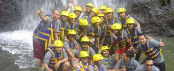

Alegeti destinati si incepeti Aventura :) Sunteti binevenit singur sau cu Echipa!
Am inclus in lista de mai jos doar locurile pe care le-am parcurs si activitatile pe cqare le-am facut, noi sau partenerii nostri de incredere!

- Nepal - tara Muntilor de gheata
- Via Ferata in Dolomiti
- Materhorn - Piramida Alpilor
- Fiji - intalnire cu Rechinii
- Freeride la La Grave
- Stok Kangri - uriasul din Kashmir
- Brazilia - natura si diversitate
- Aiguille du Midi pe schiuri
- Rafting in Bali
- Alpii, din Slovenia pana in Franta
- Cambodgia - paradisul din Asia de SE
- Dolomitii - 'cei mai frumosi munti ai planetei'
- Cu iahtul in Grecia
- Peru - Pe Drumurile Incasilor
- Mont Blanc - Escalada pe acoperisul Europei
- Vai Alpine in Romania
- Omni sports Program – mountain bike, rafting, paragliding, climbing
- Trip in Bucegi and Piatra Craiului Mountains
- 4x4 raid, Urban Quest in Transylvanian Citadels
- Turism de Aventura in Valea Bistritei
--- "Lumea este o carte, iar cei care nu calatoresc, citesc doar prima pagina" Sf. Augustin ---